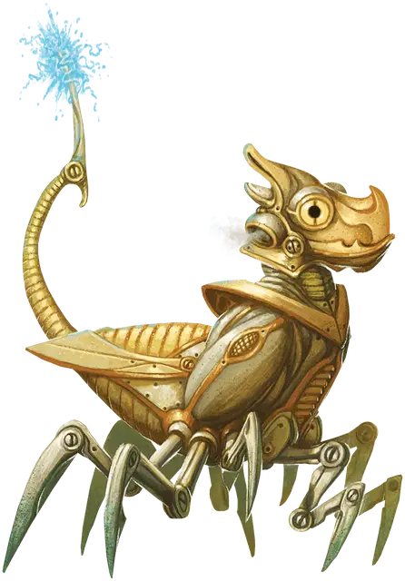

Шустрик
Kiddywidget
Маленький Конструкт

Класс Доспеха 16 (природный доспех)
Хиты 15 (2к6 + 8)
Скорость 20 футов, лазая 20 футов
| мод | спас | ||
|---|---|---|---|
| СИЛ | 6 | −2 | −2 |
| ЛОВ | 14 | +2 | +2 |
| ТЕЛ | 18 | +4 | +4 |
| мод | спас | ||
|---|---|---|---|
| ИНТ | 1 | −5 | −5 |
| МДР | 10 | +0 | +0 |
| ХАР | 1 | −5 | −5 |
Иммунитет к урону электричество, яд
Иммунитет к состояниям окаменение, ослепление, отравление, паралич, глухота, истощение
Чувства тёмное зрение 60 футов, пассивное Восприятие 10
Языки Шустроштук
Опасность 1/2 (100 опыта)
Бонус мастерства +2
Особенности
Необычная природа. Шустрику не нужен воздух, еда, питье и сон.
Действия
Мультиатака. Шустрик совершает две атаки: одну укусом и одну хвостом.
Укус. Рукопашная атака оружием: +4 к попаданию, досягаемость 5 футов, одна цель. Попадание: 4 (1к4 + 2) колющего урона. Если цель существо, то оно становится схваченным шустриком (Сл высвобождения 8).
Хвост. Рукопашная атака оружием: +4 к попаданию, досягаемость 5 футов, одна цель. Попадание: 4 (1к4 + 2) колющего урона плюс 2 (1к4) урона электричеством.
Описание
Шустроштука родившая детеныша, не может после этого размножаться в течение 3к6 дней. Тем не менее, учитывая, что шустроштуки - это конструкты без естественной продолжительности жизни, невозможно сказать, сколько шустриков могут произвести их родители.
Взросление. Для рождения одного шустрика оплодотворенной шустроштуке требуется 3к6 часов. Новорожденный шустрик магическим образом превращается во взрослую особь за 10 дней.
Автономность. В отличие от шустроштук, которые создаются, а не рождаются, шустрики не подчиняются владельцу кольца контроля, даже после того как они вырастут и станут шустроштуками.